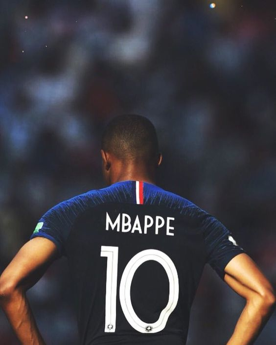

In players such as Romelu Lukaku, Eden Hazard, Kevin de Bruyne, Antoine Griezmann, Kylian Mbappe and Paul Pogba, these sides boast some of the world's most devastating attacking players. But their managers utilise the quality at their disposal in different ways. France boss Didier Deschamps - who is aiming to emulate Mario Zagallo and Franz Beckenbauer by winning the World Cup as both a player and manager - has often been criticised for failing to get the most out of his squad. 
Functionality, rather than flair, has been the key so far in Russia. They needed a late own goal in their opening match against Australia, edged past Peru 1-0 in their second, then played out a dull goalless draw with Denmark.
They did impress in beating Argentina 4-3 in the last 16, but that kind of open game is not Deschamps' style. "If you are looking for 5-0, don't come to a World Cup, you won't get this," he said.